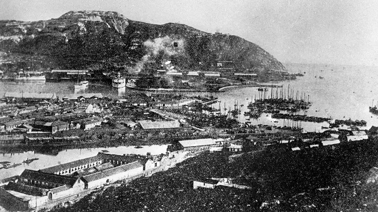

Главная старница
История порта
Таблица мониторинга
История морского порт города Красноастанска
История морского порта начинается в далёком 1965 году

Порт был построен для доставки материалов и продовольствия в Красноастанск, а также для вывоза полезных ископаемых из Красноастанска.